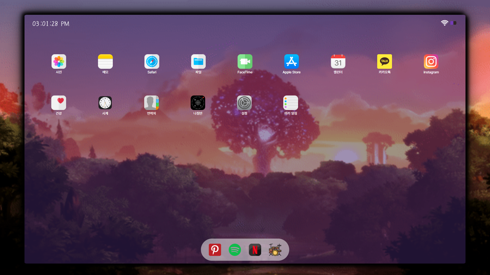
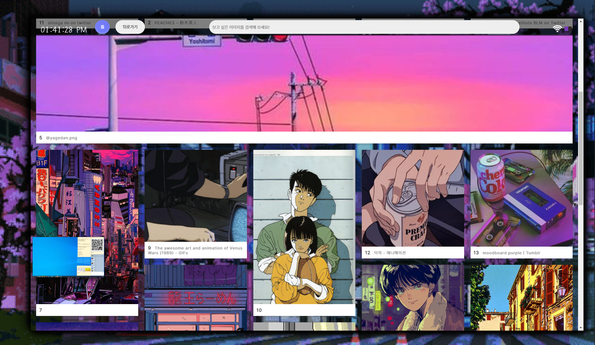
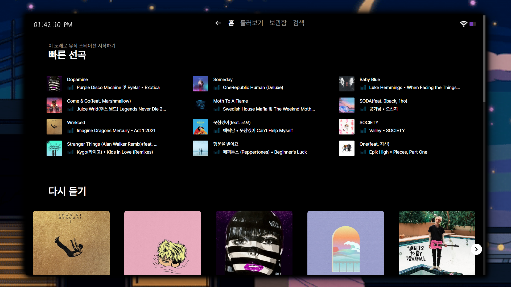
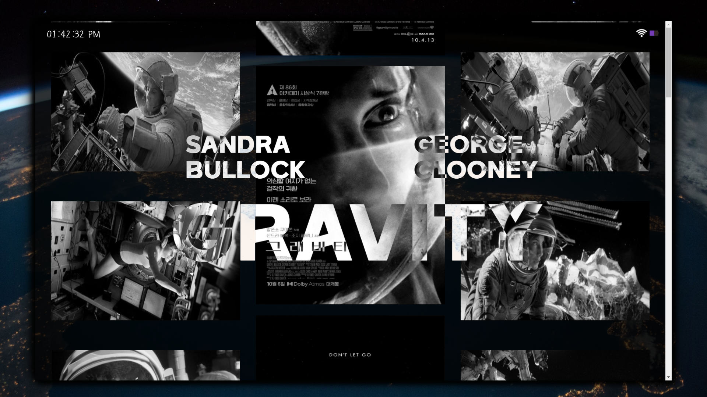
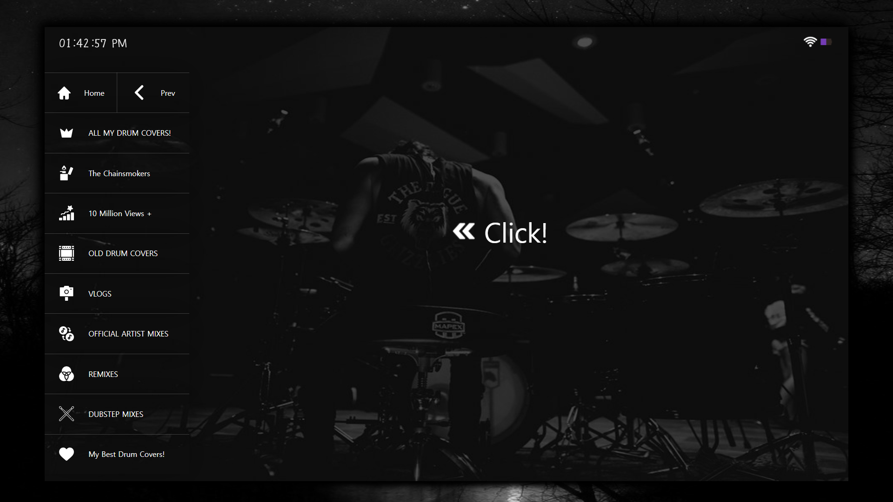

iPad UI Website
"2021.12.22. ~ 2022.01.09."
iPad UI Website
"2021.12.22. ~ 2022.01.09."
아이패드 ui 형식으로 제작하였습니다. 메인 페이지, 7개의 서브 페이지로 구성되어 있습니다.
메인 페이지에서 하단 4개의 아이콘을 클릭하면 각 해당 서브 페이지로 이동합니다.
첫 번째 서브 페이지는 카카오 API를 이용하여 키워드를 검색하면
이미지를 가져올 수 있도록 하였습니다.
노래는 클릭하시면 재생 됩니다
🙂
    